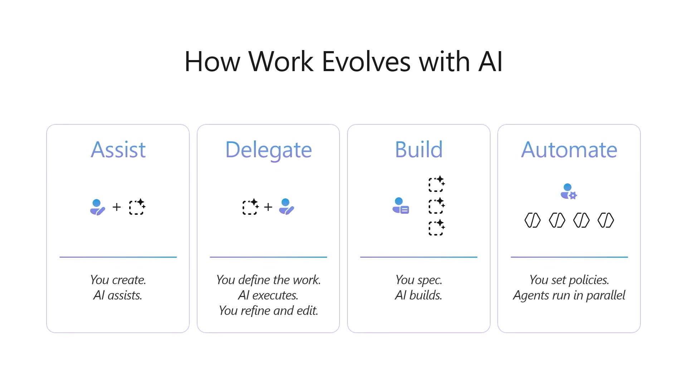
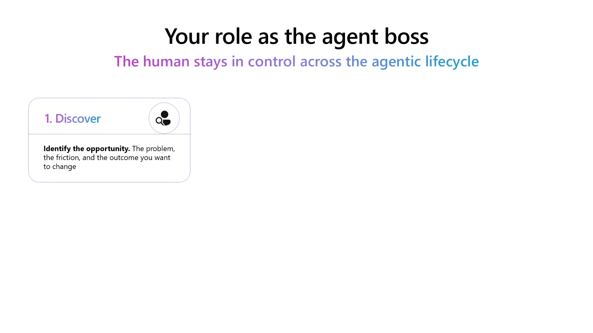
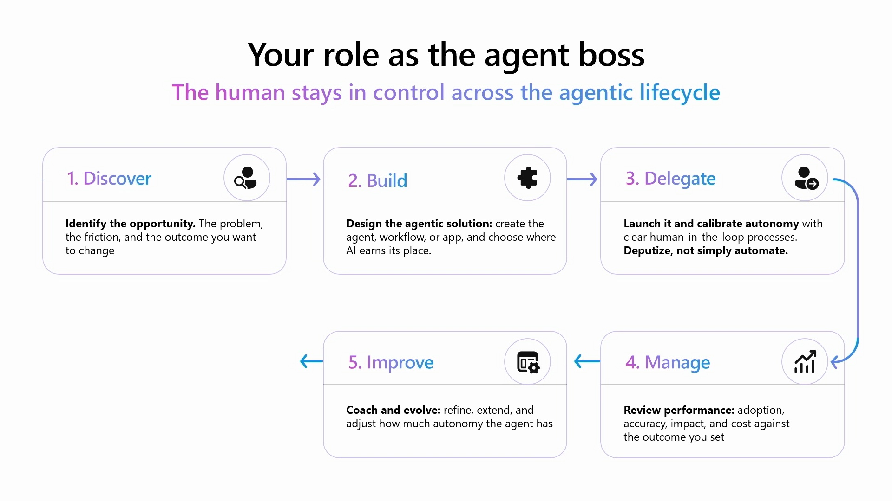

辅助模式 Assist（对应 Chat 对话审阅）
人类亲手完成主体工作并整理素材，随后唤起对话助手执行审阅、分析与摘要提炼——这是绝大多数职场人接触生成式工具的起点 [1]。
在 Microsoft Ignite 2026 演播室专场 LIVE107 中，Microsoft Mechanics 主持人 Jeremy Chapman 与 Copilot Studio 产品负责人 Jack Rowbotham 拆解了每位员工向“智能体老板（Agent Boss）”跃迁的实战方法论 [1][2]。随着企业 AI 完成从检索、任务连接到自主推理循环的三次底层演进，人类需要横跨辅助、委派、定制构建与自动巡航四种协作模式来配置管理幅度——从轻量对话场景的 1:10 配比收敛至高自主智能体的 1:5 深度督导，并在 Copilot Studio 六阶段全生命周期中以“受权代办（Deputize）”守住业务问责主驾席 [1][3]。
01 / Three AI Shifts & Four Patterns
过去数年间，企业与人工智能的交互边界经历了三次底层跃迁 [1]。在 LIVE107 开场对话中，Jack Rowbotham 沿着时间脉络梳理了这三重演进：第一阶段是检索（Retrieval），生成式模型扎根企业业务语境查询海量数据并给出扎实解答；很快演进到第二阶段任务执行（Tasks），模型通过模型上下文协议连接后台工具并直接更新业务线系统；而过去一年加速涌现的第三阶段则是自主性（Autonomy）——智能体开始承担推理与规划，在后台驱动智能体循环（Agentic Loop）独立推进整段工作 [1][2]。
这三次底层能力演进，直接催生出员工日常使用与驾驭智能体的四种核心交互模式，并一一对应四种全新的工作形态（Chat、Co-work、Code、Auto）[1][2]：
人类亲手完成主体工作并整理素材，随后唤起对话助手执行审阅、分析与摘要提炼——这是绝大多数职场人接触生成式工具的起点 [1]。
人类向智能体注入更多信任，负责界定清晰的任务目标；智能体自行拟定计划并生成演示文稿或文档初稿，人类最后接手精修润色 [1]。
面对高度独特的企业专属业务流程，人类将重心放在编写严谨的需求规格说明上，由智能体与开发底座按规格构建并交付定制化成品 [1]。
最受关注的自动驾驶形态：人类专注配置权限边界与治理策略，智能体则在幕后全天候常驻运转，自动响应事件并闭环业务动作 [1][3]。
本场 LIVE107 为 Microsoft Ignite 2026 官方演播室访谈（全长 8 分 52 秒，现场内嵌演示文稿画面）[1][2]。下方交互导览台集成了微软官方 Medius 点播流、高清视频直链、aka.ms/agentboss 官方指南入口以及五幕逐秒校对纪要，点击顶部章节按钮即可按时间轴核对核心论断 [1][2]：
切换四大协作模式、1:10 与 1:5 人机配比、受权代办、评测调优与组合退役五幕实录，一键加载官方点播播放器。
02 / Human-to-Agent Ratio
既然员工同时调遣着对话审阅、协同撰稿、定制方案与后台自动巡航四类体验，Jeremy Chapman 顺势抛出了全场核心命题：究竟什么才叫作一名合格的“智能体老板（Agent Boss）”？ [1] Jack Rowbotham 指出，成为智能体老板绝不只是当一名工具使用者，尤其是在迈入第三类“构建（Build）”与第四类“自动巡航（Automate）”深水区时，员工必须站在端到端业务全局思考——追问立项背后的真实业务意图、设计受控的委派链路，把智能体的算力真正转化为个人与团队的业务影响力 [1][3]。
衡量一位智能体老板管理半径的关键标尺，是 人与智能体配比（Human-to-Agent Ratio） [1]。每个组织、部门乃至具体岗位的最优配比，都取决于智能体的自主深度与业务风险 [1]。如果手头大多是偏简单的对话检索类助手（Chat），单名员工完全可以实现 1:10 的高配比并行调度；但如果智能体具备高度自主的推理规划与跨系统写操作能力，管理幅度就应当收敛至 1:5 左右——因为越自主的智能体越需要人类老板持续投入精力做方向引导、策略纠偏与评测改进，这与带好一支真人业务团队并无二致 [1]。

Jack Rowbotham 结合现场课件阐释 Chat、Co-work、Code、Auto 四种新工作形态如何重塑人类在业务流中的站位 [1][2]。

在动手搭建任何智能体之前，先锁定高确定性的商业机会与投资回报率，杜绝“先上线再找理由”的盲目建设 [1]。
03 / Lifecycle Stages 1–3: Intent & Deputize
当员工真正以老板视角统管智能体生命周期时，人类在每一个环节都必须坐在主驾席（In the driver's seat）[1]。在 LIVE107 中段，Jack 与 Jeremy 深入剖析了 Copilot Studio 智能体全生命周期的前三个关键阶段，直指当前企业落地的三大常见误区 [1][3]：
04 / Lifecycle Stages 4–6: Evals & Consolidation
许多团队在智能体上线那一刻欢呼庆祝，却忽略了真正决定长期成败的后半程治理 [1]。在生命周期的第四至第六阶段，智能体老板的工作重心转向精细化运营、成本效能调优与资产组合新陈代谢 [1][2]：
投产后持续紧盯核心业务指标：真实用户到底有没有在用？是否真正拿到了业务价值？智能体在后台是否准确调用了预期工具、推理链条是否严密无偏？ [1]
建立自动化评测集（Evals）验证每次改动；参考大会主题演讲中优化指令集与微调测试的做法，将昂贵前沿模型按需切换为词元与额度效率更高的模型，且每次只做一处小改动，证实有效后再推进下一步；同时审视后台定时任务，把没必要每天跑 3–4 次的作业调低为隔天运行 [1]。
当个人或小组智能体验证高价值后，梯次推广至整个部门乃至全公司共享；反之，当某个智能体不再贡献增量价值或出现职责重叠时，必须像传统 IT 应用生命周期管理那样果断将其退役下线，或利用智能体间协议（Agent-to-Agent Protocols）将零散小安装实例整合进能力更强的核心智能体中 [1][3]。

Jack Rowbotham 与 Jeremy Chapman 强调杜绝一次性大改，通过 Evals 度量真实增益，让词元消耗与人类真实工作节奏严丝合缝 [1]。
05 / Skills & Month-One Playbook
如果观众今天看完专场希望立刻迈出成为智能体老板的第一步，该从何处着手？Jack Rowbotham 在访谈收尾给出了官方学习入口 aka.ms/agentboss，并特别叮嘱职场人不要只盯着硬核技术指标，而要同步锻造决定管理上限的人类软实力 [1][2]：
| 能力与治理维度 | 技术硬实力与工程动作（Hard Technical Skills） | 智能体老板核心软实力（Human Boss Soft Skills） | 本月首条工作流落地核对项 |
|---|---|---|---|
| 立项与边界设计 | 区分确定性规则路径与模型推理节点，混编应用与工作流 [1] | 人类抱负与目标感（Ambition & Purpose）：聚焦真正值得做的事 [1] | 选定 1 条高频业务流，动工前写清商业回报预期而非先建后补 [1] |
| 授权与合规风控 | 编写高质量提示词、配置负责任 AI 护栏与人在回路审批 [1] | 批判性判断力（Judgment & Critical Thinking）：坚持受权代办问责 [1] | 按自主度核定个人 1:10 或 1:5 管理配比，明确异常升级责任人 [1] |
| 持续评测与组合演进 | 运行自动化评测集、切换高词元效率模型、用智能体间协议整合 [1] | 系统思维（Systems Thinking）：全局审视跨负载协同与退役清理 [1] | 每次仅做单点小步调优，砍掉每日 3–4 次的冗余空转定时任务 [1] |
正如 Jack 引用大会主题演讲所总结的那样，提示词工程、负责任 AI 与安全护栏固然是构建智能体的必备基本功，但真正区分平庸配置者与卓越“智能体老板”的，始终是人类的抱负（Ambition）、判断力（Judgment）、批判性思维（Critical Thinking）与系统思维（Systems Thinking） [1]。归根结底，把一个人塑造成优秀团队管理者的核心素养，如今正原封不动地延伸至你所统领的跨场景智能体舰队之上 [1][3]。
06 / References: Official Primary Sources & Guides
https://medius.microsoft.com/video/asset/HIGHMP4/e2c16839-f8e3-493a-a698-c79121165845）